Es la historia de un hombre albino y obeso que es abandonado por su esposa. Tras sufrir por amor, decide cambiar su vida, transformar su cuerpo y recuperar su autoestima. En el gimnasio conoce a una hermosa pelirroja, pero cuando su antigua esposa descubre en quién se ha convertido, intenta regresar a su vida.
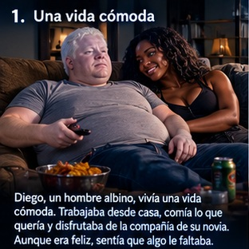
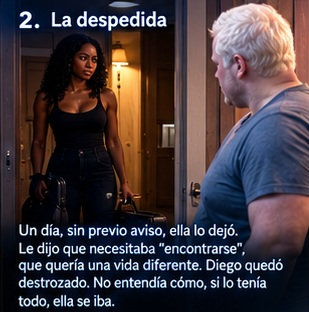
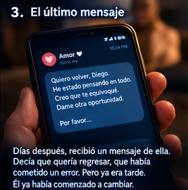
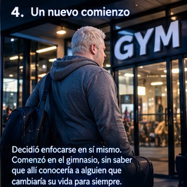
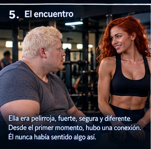
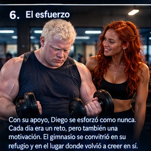
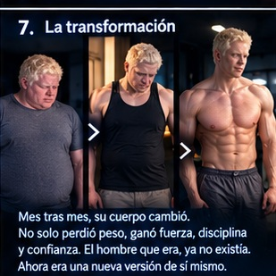
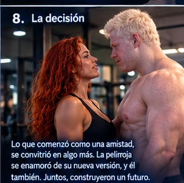
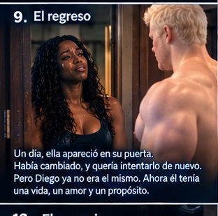
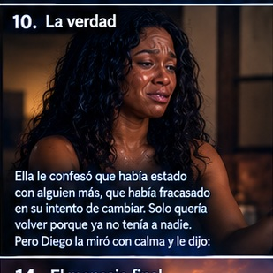
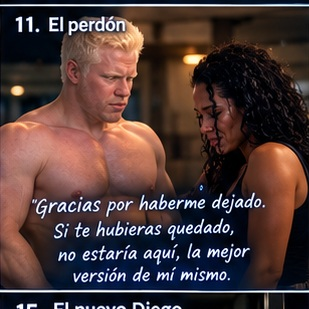
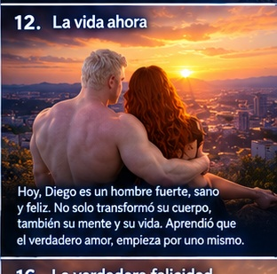
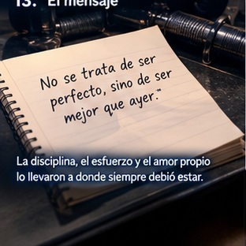
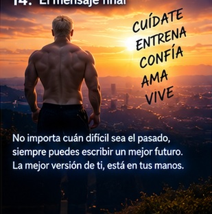
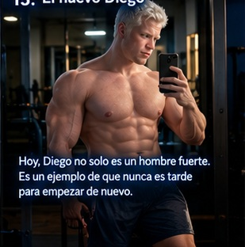